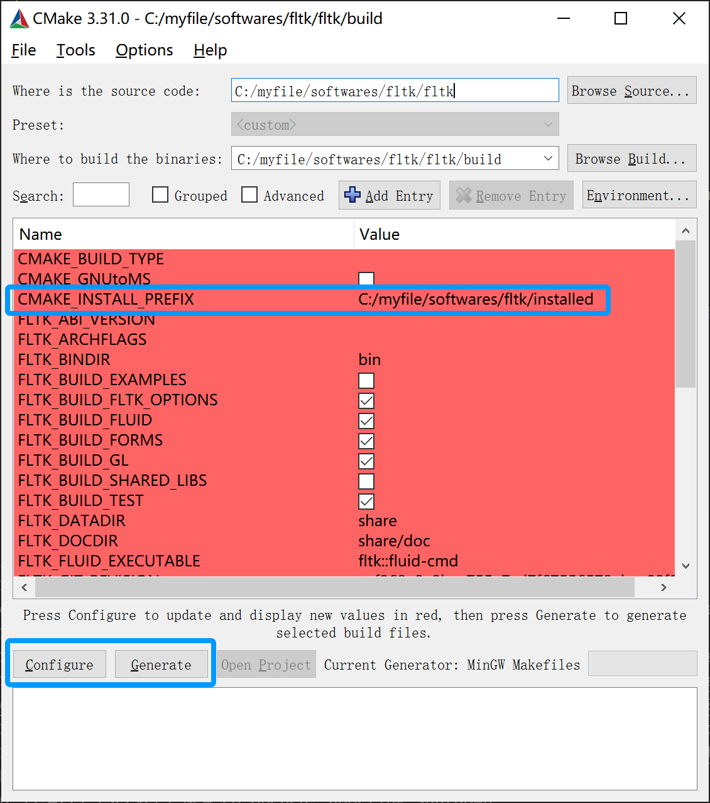
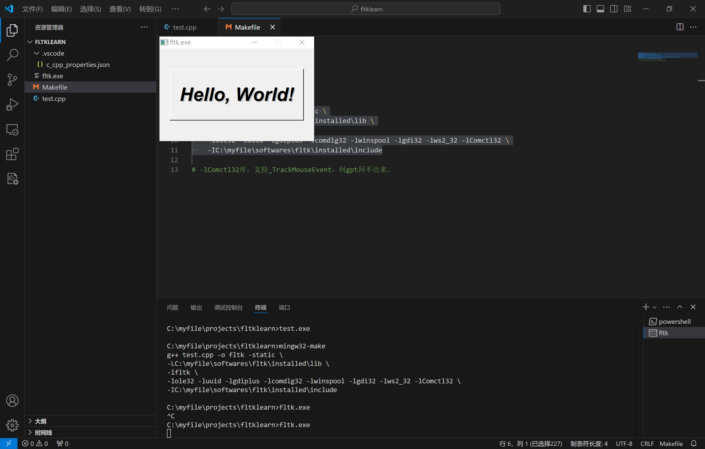

fltk
ubuntu
官网下载源码
解压文件
tar -xvf fltk .tar.gz编译
./configure --enable-debug --enable-shared --enable-threads --enable-xdbe --enable-xft安装
sudo make install
windows
安装mingw64
安装cmake
略~
安装fltk
- 1，下载源码
- 2，启动cmake-gui，也可以直接CLI configure，配置选择源码路径以及make生成路径

- 3，点configure配置mingw编译器，只用gcc和g++，配置安装路径
- 4，点generate生成makefile
- 5，进入make生成路径文件夹，执行mingw32-make install
使用
示例代码test.cpp1
2
3
4
5
6
7
8
9
10
11
12
13
14
15
16
int main(int argc, char **argv)
{
Fl_Window *window = new Fl_Window(300,180);
Fl_Box *box = new Fl_Box(20,40,260,100,"Hello, World!");
box->box(FL_UP_BOX);
box->labelsize(36);
box->labelfont(FL_BOLD+FL_ITALIC);
box->labeltype(FL_SHADOW_LABEL);
window->end();
window->show(argc, argv);
return Fl::run();
}
makefile文件1
2
3
4
5
6all:test.cpp
g++ test.cpp -o fltk -static \
-LC:\myfile\softwares\fltk\installed\lib \
-lfltk \
-lole32 -luuid -lgdiplus -lcomdlg32 -lwinspool -lgdi32 -lws2_32 -lComctl32 \
-IC:\myfile\softwares\fltk\installed\include
后边儿一大堆库是mingw带的系统库，写一般程序用不到，gui库是这样的，乐。
注意到那个Comctl32，没有的话会报错，报的错问gpt会让你添加user32，没卵用，那个库是在微软官网找到的。
执行mingw32-make编译得到fltk可执行文件，执行效果如下：

在blkrv中使用
blkrv仅支持在linux上运行，fltk用于模拟显示器，因此，如果需要显示图形化内容，请使用make clean && make ENABLE_GPU=1以开启图形化显示。